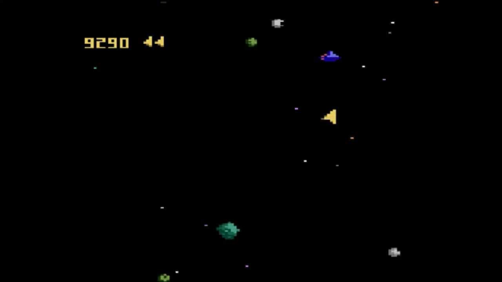
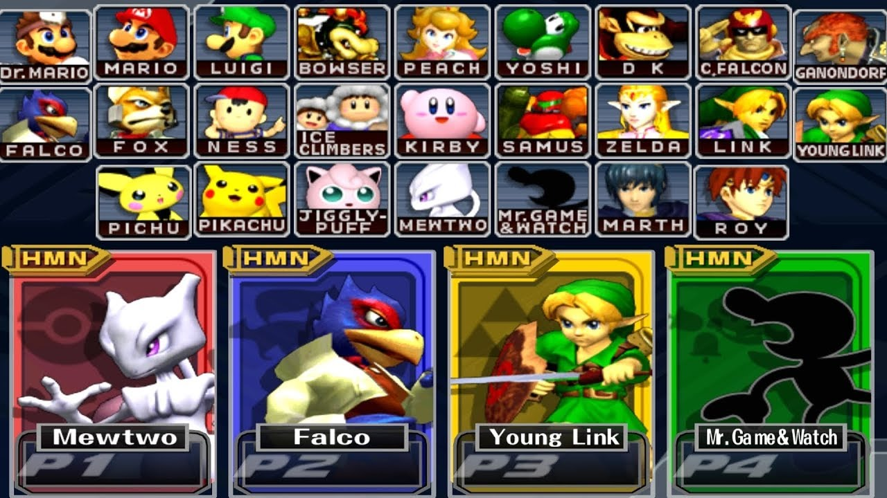
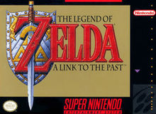
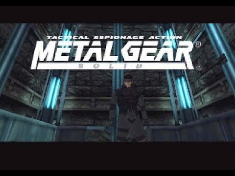

You now know about the consoles, but here is a list of some popular games made for each of these systems:
-
Asteroids for the Atari 7800:

Asteroids was ported to the atari7800 in 1986 from the arcade game.
-
Super Smash Bros Melee for the Gamecube:

Melee was such a big hit for the gamecube that, years later, many people still play it competitively.
-
Mario kart 64 for the N64:
Mario kart 64 was the second mario kart ever released, published in 1996.
-
Tetris for the NES:
Tetris is the most sold game in the world with over 500 million copies sold, so its no wonder that it's on this list.
-
Legend of Zelda A Link to the Past for the SNES:

A Link to the Past is a very well known zelda game made for the SNES in 1991.
-
Metal Gear Solid for the Playstation:

Metal Gear Solid is one of the most popular games made for the playstation, with it's movie like cutscenes and paced action.